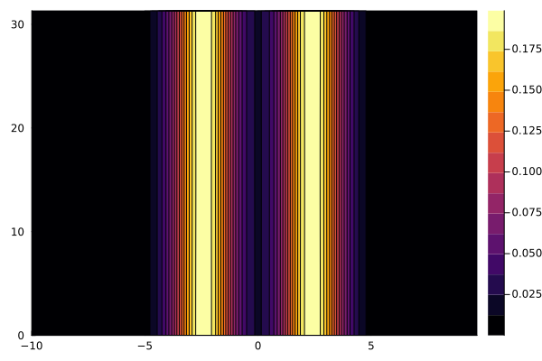
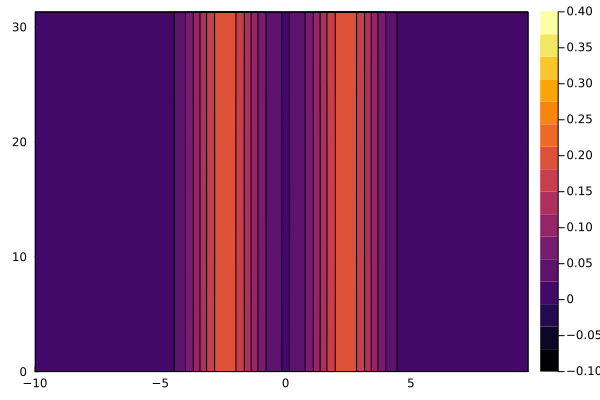

using Plots, Statistics, FFTW, LinearAlgebra
using VlasovSolvers
dev = CPU() # device
nx, nv = 320, 64 # grid resolution
stepper = StrangSplitting() # timestepper
dt = 0.1 # timestep
nsteps = 1000 # total number of time-steps
kx = 0.2
eps = 0.001
v0 = 2.4
xmin, xmax = 0, 2π/kx # X Domain length
vmin, vmax = -10, 10 # V Domain length
xgrid = OneDGrid(dev, nx, xmin, xmax)
vgrid = OneDGrid(dev, nv, vmin, vmax)
df = DistributionFunction( xgrid, vgrid )
for (i,x) in enumerate(xgrid.points), (j,v) in enumerate(vgrid.points)
df.values[i, j] = (1 + eps*cos(kx*x))*0.5/sqrt(2pi)*(
exp(-.5*(v - v0)^2) + exp(-.5*(v + v0)^2))
end
contourf(vgrid.points, xgrid.points, df.values)
"""
compute_e(f)
compute Ex using that -ik*Ex = rho
"""
function compute_e( f )
dv = f.vgrid.step
rho = dv * sum(real(f.values), dims=2)
rho = vec(rho .- mean(rho))
nx = f.xgrid.len
xmin = f.xgrid.start
xmax = f.xgrid.stop
kx = 2π / (xmax - xmin)
modes = zeros(Float64, nx)
modes .= kx * vcat(0:div(nx,2)-1,-div(nx,2):-1)
modes[1] = 1.0
rhok = fft(rho) ./ modes
rhok .*= -1im
ifft!(rhok)
real(rhok)
end
import VlasovSolvers: advection!
f = copy(df.values)
fᵗ = transpose(f) |> collect
ex = compute_e(df)
advection!(fᵗ, vgrid, ex, 0.5dt)
v = collect(vgrid.points)
anim = @animate for it in 1:nsteps
advection!(f, xgrid, v, dt)
df.values .= f
ex = compute_e( df )
transpose!(fᵗ, f)
advection!(fᵗ, vgrid, ex, dt)
transpose!(f, fᵗ)
contourf(vgrid.points, xgrid.points, f, clims=(-0.1,0.4))
end every 10
gif(anim, "assets/tsi.gif", fps = 15)
